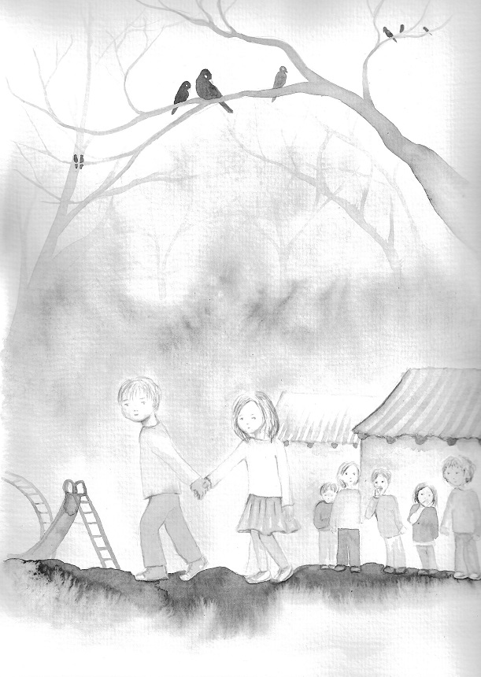

What is the Human Being?
by Judith von Halle

Knowledge about the human being, his true inner and outer nature, can be acquired if one begins to consider him – which is, after all, his own being – with the methods of anthroposophical spiritual science. Practicing anthroposophical spiritual science is possible for everyone. No special qualifications are needed. By being human one is qualified. For it is not at all the task of anthroposophical spiritual science to investigate the spirit, but by means of the spirit to investigate the world and humanity. The fact that this spirit is available to the human being means that we are – without any kind of specialized training – very well equipped for anthroposophical investigative work, provided that we are really willing to do so.
Surely we can advance to higher knowledge with anthroposophical spiritual science, as is the case with every scientific activity. But anthroposophical spiritual science can be practiced by everyone, because it embraces every imaginable field in which one can be interested, and it always begins with what everyone – also those not scientifically trained – can do: observe. The precise observation of all the phenomena and events without hasty judgment about what is being observed is the prerequisite for all serious scientific work.
Everyone can practice observing the surrounding objects and events, starting by observing the small, most familiar things, from the processes of growth and decay in a flower to phenomena to which one has not yet been confronted, such as the progression of illness in a dementia patient. Both, the apparently longtime familiar as well as what has never been seen before, demand close attention from us, for when we quietly observe a long familiar process without the usual hasty evaluation or judgment, we will discover much that we were previously unaware of; it will be like a completely unknown phenomenon...
Continue
¿Qué es el Ser Humano? Continuar en español
Don't forget to so we can advise you when the next issue is ready!


You can find us under the Southern Cross in the Traslasierra Valley, Province of Córdoba, Argentina. Visitors always welcome. Just follow the sign that reads: La Cruz del Sur.
Frank Thomas Smith, Editor
Current Events
Ingreso Básico Universal (IBU)
Hace un cuarto de siglo en un congreso de consultores en Alemania escuché a una consultura dinamarquesa dar una charla sobres “Como echar a los empleados humanamente”. La charla fue interesante, pero lo que más recuerdo fue su palabras: ¡El desempleo estás para quedarse! Se refería a la tecnificación del trabajo, la robotización, etc., no a una pandemia, como la que ahora ha surgido por el mundo entero y ha hecho al problema del desempleo y la pobreza más urgente que nunca. El IBU reemplazaría a los programas gubernamentales de asistencia – ya existentes y basados en la situación económica de las personas, tales como el seguro de desempleo, la asignación para jefes de familia, la AUH etc. – que constituyen una gran proporción de los gastos sociales de cualquier gobierno. La idea es garantizar la subsistencia y también estimular la iniciativa personal y facilitar los esfuerzos para mejorar –es decir, suficiente para vivir, pero no para vivir holgado.
¿Cómo funcionaría un ingreso básico de este tipo en la Argentina?
Continuar
The Bleeding Wound - Osama Bin Laden won (twice)

It’s July 2020 and I’m about to turn 76, which, as far as I’m concerned, officially makes me an old man. So put up with my aging, wandering brain here, since (I swear) I wasn’t going to start this piece with Donald J. Trump, no matter his latest wild claims or bizarre statements, increasingly white nationalist and pro-Confederate positions (right down to the saving of the rebel stars and bars), not to speak of the Covid-19 slaughter of Americans he’s helped facilitate. But then I read about his demand for a “National Garden of American Heroes,” described as “a vast outdoor park that will feature the statues of the greatest Americans to ever live” and, honestly, though this piece is officially about something else, I just can’t help myself. I had to start there. Yes, everyone undoubtedly understands why General George Patton (a Trump obsession) is to be in that garden, not to speak -- given the president’s reelection politics -- of evangelist Billy Graham, Supreme Court Justice Antonin Scalia, and former president Ronald Reagan. Still, my guess is that most of you won’t have the faintest idea why Davy Crockett is included. I'm talking about the frontiersman and Indian killer who died at the Alamo. Given my age, though, I get Donald Trump on this one and it gave me a rare laugh in a distinctly grim moment. That’s why I can’t resist explaining it, even though I guarantee you that the real subject of this piece is Osama bin Laden’s revenge... Continue
Killing Democracy in America -
The Military-Industrial Complex as a Cytokine Storm
The phrase “thinking about the unthinkable” has always been associated with the unthinkable cataclysm of a nuclear war, and rightly so. Lately, though, I’ve been pondering another kind of unthinkable scenario, nearly as nightmarish (at least for a democracy) as a thermonuclear Armageddon, but one that’s been rolling out in far slower motion: that America’s war on terror never ends because it’s far more convenient for America’s leaders to keep it going -- until, that is, it tears apart anything we ever imagined as democracy.
I fear that it either can’t or won’t end because, as Martin Luther King, Jr., pointed out in 1967 during the Vietnam War, the United States remains the world’s greatest purveyor of violence -- and nothing in this century, the one he didn’t live to see, has faintly proved him wrong. Considered another way, Washington should be classified as the planet’s most committed arsonist, regularly setting or fanning the flames of fires globally from Libya to Iraq, Somalia to Afghanistan, Syria to -- dare I say it -- in some quite imaginable future Iran, even as our leaders invariably boast of having the world’s greatest firefighters (also known as the U.S. military).
Scenarios of perpetual war haunt my thoughts... Continue.
Features
A Vision of Christ in Firle
Firle is an attractive old village in the South Downs National Park, which manages to remain quite tranquil despite being just a few hundred yards off the ferociously busy main A27 road. It sits below the high chalk escarpment of the South Downs, from which one can see the English Channel in the distance. The road to Firle from the A27 leads nowhere except to the village and up to Firle Beacon on the downs, so there is no through traffic to disturb the peace; and since there is no street lighting, no traffic signs or road markings, and no modern buildings, one can easily imagine that the village looks very much the same as it did in 1911, when Virginia Woolf took a house there for about a year.
After a pleasant lunch in The Ram Inn and a welcome pint of Harvey’s Best Bitter for me, we walked around Firle, passing Virginia Woolf’s house. In a letter describing it to her future husband Leonard, she said: “This is not a cottage, but a hideous suburban villa – I have to prepare people for the shock”. With due apologies to the present occupant, she was not wrong, it is the ugliest house in Firle; nevertheless, she invited members of the Bloomsbury Group and other friends from literature and the arts to visit her there, including Roger Fry, Adrian Stephen, Lytton Strachey, Desmond McCarthy, Leonard Woolf, Katherine Mansfield, Duncan Grant and Vanessa Bell...
Continue
The Repentant Repents
I’ve decided to wear a mask....
I’ve seen the light and it’s obvious I was wrong. Masks prevent viruses but also are very safe. I’ve decided to wear my mask at all times. I wear it in the shop, in my car, on the beach and I’ll even wear it at home. I’ve started wearing condoms at all times as well because protection at all times is very important. If I’ve learned anything it’s that our government loves us, never ever lies to us and always has our best interests in mind. History shows the government should always without question be trusted. They are great. I’m also going to get caught up to date on my vaccines because why would anyone want to make us sick? It’s time to trust all science just like we should trust the government. I started drinking fluoride again because the government recommends it and I got this amazing fluoridated toothpaste as well to help make my teeth strong. I’ve started consuming genetically modified foods because they are definitely the same as organic foods...
Continue
We Are All Greek and Hebrew - Borges & Ben-Gurion
Jorge Luis Borges was born in Buenos Aires, Argentina, exactly 121 years ago, on August 24, 1899. He is widely acknowledged as one of the most prominent figures in universal literature. He wrote short stories, poems and essays and translated major works by classical authors. He excelled in the genres of fantasy and philosophy and is one of the most acclaimed writers of the 20th century. He wrote immortal stories, like The Aleph, Fictions The Gardens of Forking Paths and A Universal Story of Infamy, just to name a few. To be sure, Borges is deemed to be one of the greatest authors never to be awarded the Nobel Prize in Literature. He used to joke about this omission, saying, “Not granting me the Nobel Prize has become a Scandinavian tradition”. A lot has been said and written about this giant of literature but less known is the fact that the Argentinean writer had a special fondness and admiration for Judaism at large and the State of Israel in particular...
Continue
The Inward Gaze of Hermann Hesse
In 1963, Timothy Leary, the high priest of LSD, anointed a German author, Hermann Hesse, the ‘poet of the interior journey’. Hesse had died a year earlier, at the age of 85. But the novels he left behind, Leary declared in The Psychedelic Review, were a ‘priceless manual’ for navigating the acid trip.
Literature is full of weird afterlives. Franz Kafka died in 1924 believing that his manuscripts would be burnt. Herman Melville’s Moby-Dick (1851) was originally a flop. But the 1960s embrace of Hesse ranks with the weirdest of them all. He never visited the United States. He didn’t speak English. His only drug was red wine. But by 1968, as Der Spiegel observed, the hippies had pulled this fading writer ‘out of the doldrums’. Hesse went on to become the bestselling German author of the 20th century, and sits below only the Brothers Grimm and Karl Marx as the most translated German writer of recent decades.
Hesse’s work was attuned to a youth culture animated by an amorphous desire for a breakthrough in consciousness precisely because such a desire gripped him throughout his entire life. Many of us are familiar with this desire; it animates almost every young person, in one way or another. But managing it wisely can be a challenge, and Hesse, in his life and work, constitutes a study in the double-edged sword of dwelling on one’s inner worlds...
Continue
Children's Corner
Selected Siblings

They are at recess and Salomé's little brother, who is in kindergarten, climbs over the fence that separates the kindergarten from the school to wave to his sister. Pedro, the bully from the first grade, trips him with his foot. He falls down and begins to cry, more because of the surprise than from something hurting. Salomé embraces him to calm him down.
“Is he your brother,” Pedro asks Salomé.
“Yes,” says Salomé, who is taller than Pedro and isn't afraid of him, “so don't pick on him anymore or I'll pick on you double.”
“Well, I didn't know he's your brother,” Pedro answers. “Anyway, he shouldn't be here.”
“Be quiet, bully!” Salomé says, while she takes her brother back to the kindergarten. He has stopped crying and sticks his tongue out at Pedro, who is furious, but doesn't know what to do. The other children see it and laugh at him.
Nicolás had been observing the scene with attention. All his classmates have at least one brother or sister. He is the only one who has neither...
Continue
Continuar en español.
Roberto Fox [Frank Thomas Smith]
Science
Goetheanism in Science - appendix to his "The Cosmological Principles"

Cosmology, the science of the entire physical Universe, from the beginning of its contemporary development, that is from the time when Albert Einstein wrote down a single set of mathematical equations and suggested that it represent the entire material world, has employed models for presenting its results. Models, in the sense used in cosmology, are strict mathematical conclusions drawn from simplified but distinctly formulated assumptions. Other branches of astronomy and physics also used models. There were models of atoms, models of stellar interiors, models of the Earth's core....Models were first used for understanding structures and processes not accessible to direct observation. The atoms were too small to be observed; the stellar and terrestrial interiors were screened by the outer shells of those bodies. Similarly, the regions of the Universe situated beyond the cosmological horizon were unobservable and thus needed to be represented through models...
Continue
Fiction
Saint Death
I had a pounding hangover when I woke up well past noon in a strange bed. A bottle of mineral water and an empty glass stood on the night table and clean towels had been placed on the dresser. I got up slowly, drank two glasses of water, opened the shutters and looked out the window. The bright sky that met the flat grassy earth at the horizon assaulted my aching eyes. After a shower and two aspirins that I found in the bathroom medicine cabinet, I eased myself downstairs to where the Prietos were having lunch in the dining room. Both were in their early sixties, Señora Prieto perhaps a few years younger. She tinkled a small bell and an obese Indian woman entered silently from the kitchen. I gladly accepted Señora Prieto's suggestion of breakfast of café con leche, toast and marmalade. The servant waddled back to the kitchen.
"Our son Pedro did not give us any details concerning your problem and we would not dream of asking you," Señora Prieto said. "We can only offer you our hospitality and hope that your stay here will provide the tranquility you seek." She was very polite and obviously sincere, but her smile seemed forced. My colleague Pedro Prieto had insisted that I go to El Chaco and spend some time on his parent’s estancia when, according to him, I was on the point of cracking up over a woman. It’s true that I was in pretty bad shape, drinking too much and all that, but, well…no point in getting ahead of myself.
"I'm afraid we won't be able to spend much time with you though, Marcos," Señor Prieto added. "You see, we are going through a rather difficult period." He folded his napkin on the table and smoothed it repeatedly. "Please don't think we always go around with such long faces. It happens that we are in mourning. The man who fetched you at the airport last night?" I nodded, although I had only a dim recollection of the man. "His name was Gumersindo Kaiser. An hour or two after bringing you here he met with an unfortunate accident."
Continue
Kafka's Long Lost Letter

“You know, you have the best hands in the world,” Matthew said, nuzzling her enticing bare shoulder lifting and moving rhythmically up and down, up and down, as she stroked the romantic high keys of the Chopin sonata she adored. After all, he thought, I’m an expert on the innate expertise of those hands. In a flash of libido he imagined his body stretched out along the keyboard and perceived her sensual touch as if on himself as she ran her long fingers with Calypso-like pink nails over the white keys and from time to time teased the blacks with furtive caresses. That wanton woman! She thrives on the suggestive with her sudden dips into the libertine. Matthew took her piano playing personally; he perceived her emphasis on Chopin’s high notes like an irrefutable invitation. Spontaneously, he accepted. And kissed her right ear tenderly...
“You should know,” she said, reacting to his ear kiss in what he considered her most sensual manner: her face flushed and with an audible little sigh she continued to tickle the keys while pressing her face hard against his. “And yours aren’t bad either,” she added in a hoarse voice. Though she was called petite, Laura was actually tallish for an Italian woman, slim and with the perfect female protrusions in all the right places, and, Matthew thought, she has the sexiest hands and legs south of the Alps...
Continue
Anthroposophy
From Jesus to Christ
The object of these lectures is to give you an idea of the Christ-Event in so far as it is connected with the historical appearance of the Christ in the person of Jesus of Nazareth. So many questions of spiritual life are bound up with this subject that the choice of it will enable us to make a wide survey of the realm of Spiritual Science and its mission, and to discuss the significance of the Anthroposophical Movement for spiritual life of the present time. We shall also have the opportunity of learning what the content of religion is. And since this content must spring from the common heritage of mankind, we shall seek to know it in its relation to the deeper sources of religious life, and to what the sources of occult science have to tell us concerning the foundation of all religious and philosophical endeavours. Much that we shall have to discuss will seem to lie very far from the theme itself, but it will all lead us back to our main purpose... Continue
The Gospel of Luke
Virgin Mary
During our last meeting here some time ago we spoke of the deeper currents of Christianity with particular reference to the Gospel of St. John and of the great images and ideas accessible to man when he reflects deeply upon this unique text. More than once it has been emphasized that the very depths of Christianity are illuminated by that Gospel and some of those who have heard lecture courses on the same subject might feel inclined to ask: If the viewpoint reached through studying the Gospel of John may truly be called the most profound, can it be widened or enriched in any way by study of the other three Gospels of Luke, Matthew and Mark? Again, those who tend to be mentally lazy might ask: If the deepest depths of Christianity are to be found in the Gospel of John, is it still necessary to study Christianity as presented in the other Gospels, especially in the apparently less profound Gospel of St. Luke? Anyone who might put this question believing such an attitude to be worthy of consideration would be labouring under a complete misapprehension. The scope of Christianity itself is infinite and light can be shed upon it from the most diverse standpoints. Furthermore, as the present cycle of lectures will show, although the Gospel of John is a document of untold profundity, there are facts which can be learnt from the Gospel of Luke and not from that of John. The ideas which in the lectures on the Gospel of John we came to recognize as among the most profound in Christianity, do not by any means comprise all its depths. It is possible to penetrate these depths from another starting-point altogether, basing our studies on the Gospel of Luke viewed in the light of Anthroposophy... Continue
Words and Music
Love is Here to Stay

It's very clear our love is here to stay,
Not for a year, but ever and a day,
The radio and the telephone
And the movies that we know
May just be passing fancies and in time may go.
But, oh my dear, our love is here to stay,
Together we're going a long, long way.
In time the Rockies may crumble,
Gibraltar may tumble
They're only made of clay,
But our love is here to stay.
Continue to watch and listen
Poetry
A Poem for Love and Fun
I decided to write a poem, for fun,
So looked at what some others had done.
First there was Shakespeare the Bard of course
And others possessing a certain force,
But that was old and stuffy stuff
And I, well, I meant to be tough.
So I looked at what others now are doing,
Didn't want to write what I'd be ruing;
But it looked like such a load of shit
That I didn't like it, not one bit.
Couldn't for the life of me figure out
What, if anything, it was all about...
Continue
Search SCR.org